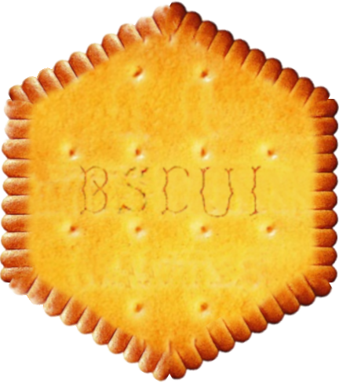

library(bscui)Create interactive figures from SVG images with {bscui}
R
Visualization
Presentation of the {bscui} R package

The {bscui} R package, made recently available on CRAN, has been written to transform SVG images into interactive figures. It can be used to display data on a drawing in a report or to interact with the drawing in a R {shiny} application. The example below is very basic and is made to give a general idea of the package principles. A more complete introduction is available in the package vignette.
Let’s load the package and start the demo.
1 Importing an SVG image
In this example, we use an SVG representation of the heliocentric system taken from the W3C: https://dev.w3.org/SVG/tools/svgweb/samples/svg-files/heliocentric.svg. This SVG file can be read with the {xml2} package:
{kind=link}
svg <- xml2::read_xml(
"https://dev.w3.org/SVG/tools/svgweb/samples/svg-files/heliocentric.svg"
)The imported SVG can be directly displayed with the bscui() function.
packageVersion("bscui")[1] '0.1.5'bscui(svg)The figure can be grabbed with mouse and enlarged or shrunk using the mouse wheel. Clicking on the button at the top-left corner of the figure displays a menu with various functions, including resetting the view and exporting the figure in SVG or PNG format. Several configuration choices are made by default but can be changed with the set_bscui_options() function, such as the zoom range or the width of the menu.
2 Make SVG elements interactive
We can interact with the figure above (grab, zoom…) but not with its elements. For example, we would like to be able to interact with the sun and the planets turning around it.
To make it possible, we need the SVG elements to be identifiable with an ‘id’ attribute. Unfortunately, it is not the case in the SVG file we took. Thus, let’s add first this attribute with {xml2}.
xml2::xml_ns_strip(svg)
circles <- xml2::xml_find_all(svg, "//circle")
for(i in 1:length(circles)){
circle <- circles[[i]]
color <- xml2::xml_attr(circle, "fill")
if(color == "#FD0"){
id <- "Sun"
}
if(color == "#F00"){
id <- "Mercury"
}
if(color == "#0F0"){
id <- "Venus"
}
if(color == "#00F"){
id <- "Earth"
}
if(color == "#C0C"){
id <- "Mars"
}
xml2::xml_attr(circle, "id") <- id
}The elements can then be made interactive with the set_bscui_ui_elements() function which takes as second argument a data frame with the following columns:
- id: the element identifier
- ui_type: either “selectable” (several elements can be selected), “button” (action will be triggered by clicking), “none” (no action on click)
- title: a description of the element to display when the mouse hovers over the element
ui_elements <- data.frame(
id = c("Sun", "Mercury", "Venus", "Earth", "Mars"),
ui_type = c("button", rep("selectable", 4))
)
wp_links <- c(
"Sun"="https://en.wikipedia.org/wiki/Sun",
"Mercury"="https://en.wikipedia.org/wiki/Mercury_(planet)",
"Venus"="https://en.wikipedia.org/wiki/Venus",
"Earth"="https://en.wikipedia.org/wiki/Earth",
"Mars"="https://en.wikipedia.org/wiki/Mars"
)
ui_elements$title <- sprintf(
paste(
'<div style="padding:5px;',
'border:black 1px solid; background:#FFFFF0AA;">',
'<strong><a href="%s" target="_blank">%s</a></strong>',
'</div>'
),
wp_links[ui_elements$id], ui_elements$id
)
bscui(svg) |>
set_bscui_ui_elements(ui_elements)The identified elements can be further customized with the set_bscui_styles() and the set_bscui_attributes() functions.
3 Shiny
The identified elements can be further leveraged in a shiny application. The code chunk below show a very simple example of such an application with the heliocentric SVG image used so far.
library(shiny)
ui <- fluidPage(
fluidRow(
column(6, bscuiOutput("heliocentric")),
column(
6,
tags$ul(
tags$li("Hovered:", textOutput("hovered", inline=TRUE)),
tags$li("Operated button:", textOutput("operated", inline=TRUE)),
tags$li("Selected:", textOutput("selected", inline=TRUE))
)
)
)
)
server <- function(input, output, session){
output$heliocentric <- renderBscui({
bscui(svg)|>
set_bscui_ui_elements(ui_elements)
})
output$hovered <- renderText({
input$heliocentric_hovered
})
output$operated <- renderText({
print(input$heliocentric_operated)
sprintf(
"%s (%s click)",
input$heliocentric_operated$id,
input$heliocentric_operated$click
)
})
output$selected <- renderText({
input$heliocentric_selected
})
}
runApp(shinyApp(ui, server))The bscuiOutput() and renderBscui() functions are used to instantiate the widget and the following information is exposed to Shiny:
input$bscuiID_hoveredreports selected elementsinput$bscuiID_hoveredreports operated button elementsinput$bscuiID_hoveredreports hovered elements
bscuiID is used to refer to the figure output id, “heliocentric” in the example above.
3.1 Figure modification
The figure can also be modified based on Shiny events by creating a “bscui_Proxy” object. It’s done by calling the bscuiProxy() within the sever function. Functions like order_bscui_elements(), add_bscui_element() and remove_bscui_elements() are used to modify the SVG structure. The update_bscui_ui_elements(), update_bscui_attributes() and update_bscui_styles() functions are used to update identified elements. Finally the update_bscui_selection() and click_bscui_element() functions are used to trigger specific elements.
All the functions above are further described and exemplified in the package vignette. And an advanced Shiny application is provided within the package:
shiny::runApp(system.file("examples", "shiny-anatomogram", package = "bscui"))